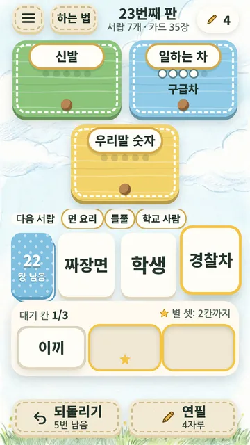
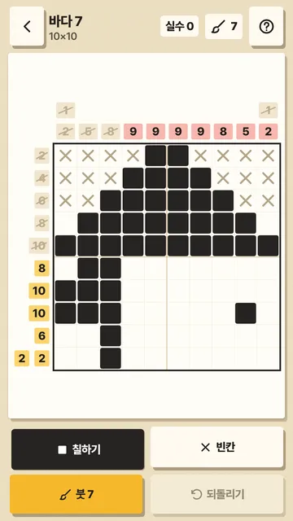
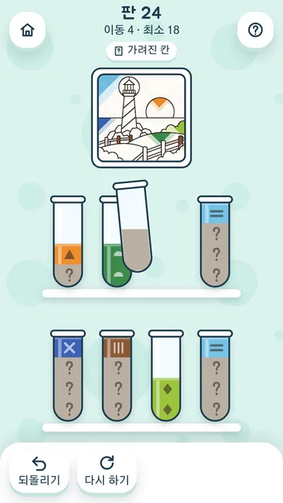
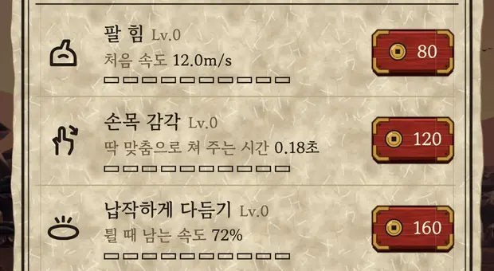
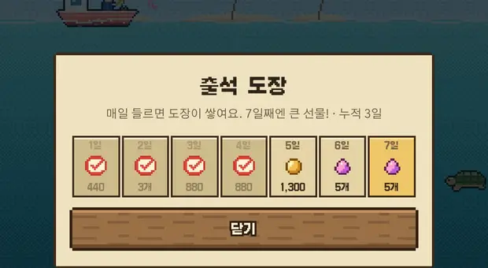
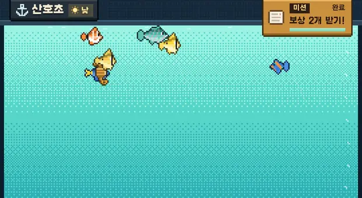
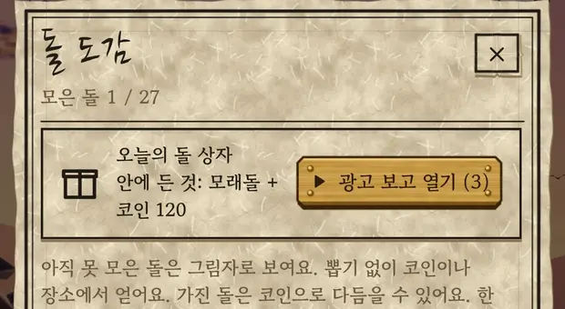
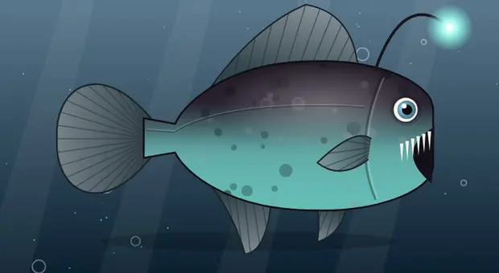
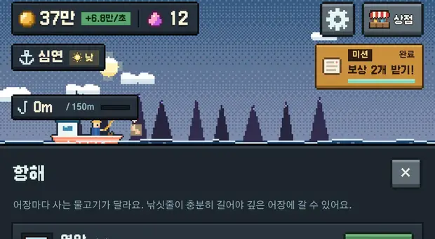

서울--:--좋은 오후예요
오늘 달-
1인 게임 회사
달나라게임즈
옆으로 그으면 돌이 튀어요
게임 고르기
1/ 7

05우리말 단어 분류 퍼즐
낱말 서랍
섞인 낱말 카드를 맞는 서랍에 나눠 넣어요
만드는 중
퍼즐 쪽은 출시 때 생겨요.

06노노그램 퍼즐
칸칸 그림
숫자를 보고 칸을 칠하면 그림이 나와요
만드는 중
퍼즐 쪽은 출시 때 생겨요.

07색 정렬 퍼즐
젤리 팔레트
같은 색끼리 병에 모으면 그림이 칠해져요
만드는 중
퍼즐 쪽은 출시 때 생겨요.
기록
2026
홈페이지를 열었어요
첫 게임 이름을 「한 마리만 더」로 정했어요
두 번째 게임 이름은 「통통 물수제비」
한 마리만 더·통통 물수제비 비공개 테스트 시작
계단의 전설·잡귀야 물러가라 비공개 테스트 시작
네 게임에 광고·결제를 붙인 판을 냈어요
로고를 먹 달토끼와 붉은 도장으로 바꿨어요
퍼즐 셋 이름을 정했어요
홈페이지를 4개 언어로 열었어요
다음 판 준비 중
내리면 옆으로 지나가요
옆으로 밀면 더 보여요
다음 판
다음 판
한 마리만 더
1.0.4
- 물고기 기록 도전
- 희귀 물고기 확률표
다음 판
통통 물수제비
1.0.3
- 휙 던지기 끝 스핀
- 결과 카드 코인 계산
다음 판
계단의 전설 · 잡귀야 물러가라
1.0.2
- 일본어·번체 중국어·영어
날짜 미정
퍼즐 셋
1.0.0
- 구글 플레이 비공개 테스트
소식

· 쓰레드
물수제비 토끼도 레벨업 됨
원문 보기 (새 창)
코인 모아서 팔 힘, 손목 감각, 납작하게 다듬기, 호숫가 매점 4가지를 올림
팔 힘 올리면 처음 던지는 속도가 빨라지고 매점은 자리 비운 동안 코인이 쌓임!!
나는 아직 다 Lv.0임...
뭐부터 올릴 거야?

· 쓰레드
낚은 물고기를 수족관에 넣으면 관람객이 와서 코인을 벌어줌
원문 보기 (새 창)
전시 7칸 다 채웠더니 1초에 214코인씩 들어오는 중ㅋㅋ
관람객은 99명
수족관에 제일 먼저 넣고 싶은 물고기 뭐야?
· 쓰레드
통통 물수제비에 돌 도감 넣었음ㅋㅋ
원문 보기 (새 창)
돌이 27종인데 나는 아직 조약돌 하나밖에 없음...
코인으로 사는 돌도 있고 장소에서 얻는 돌도 있음!! 뽑기는 없음
돌마다 튈 때 힘이 조금씩 다름
27종 다 모으면 금빛 꾸미기 준다는데 언제 모으지ㅠㅠ
· 쓰레드
초롱아귀 머리 위에 달린 거 진짜 초롱처럼 빛남!!
원문 보기 (새 창)
그 빛은 초롱 안에 사는 세균이 내는 거래ㅋㅋ 깜깜한 깊은 바다에서 그걸로 먹이를 꾀어냄
수컷은 암컷보다 훨씬 작은데 어떤 종은 아예 암컷 몸에 붙어서 산다고 함...
게임에선 해구 바다에서 낚을 수 있음
이거 처음 알았을 때 나만 놀랐어?
· 쓰레드
낚시 게임 바다가 5곳임!!
원문 보기 (새 창)
연안 → 산호초 → 대륙붕 → 해구 → 심연 순서로 깊어짐
첫 번째가 항해 화면이고 두 번째가 제일 깊은 심연ㅋㅋ 최대 6,000m라 물이 거의 까만색...
낚싯줄이 길어야 깊은 데로 갈 수 있음
제일 깊은 바다엔 뭐가 살 것 같아?
· Threads韓国語の投稿を訳しました
水切りうさぎもレベルアップする
元の投稿を見る (新しいウィンドウ)
コインをためて、腕の力・手首の感覚・石を平らにみがく・湖のほとりの売店の4つを上げる
腕の力を上げると最初に投げるスピードが上がって、売店は留守のあいだにコインがたまる!!
自分はまだぜんぶLv.0…
どれから上げる?· Threads韓国語の投稿を訳しました
ゲームを開いたら、まずログインスタンプ押す? それともすぐ遊ぶ?
元の投稿を見る (新しいウィンドウ)
釣りゲームにもスタンプがあるんだけど、みんなどうしてるか気になる笑· Threads韓国語の投稿を訳しました
釣った魚を水族館に入れると、お客さんが来てコインをかせいでくれる
元の投稿を見る (新しいウィンドウ)
展示7マスを全部うめたら、1秒に214コインずつ入ってくる（笑）
お客さんは99人
水族館にいちばん先に入れたい魚はなに？· Threads韓国語の投稿を訳しました
ぽんぽん水切りに石図鑑を入れたよ笑
元の投稿を見る (新しいウィンドウ)
石は27種類あるのに、自分はまだ小石ひとつだけ…
コインで買う石もあれば、場所で手に入る石もある!! ガチャはなし
石ごとに跳ねるときの力がちょっとずつちがう
27種類ぜんぶ集めると金色の飾りがもらえるけど、いつ集まるんだろ泣· Threads韓国語の投稿を訳しました
チョウチンアンコウの頭の上のやつ、ほんとにちょうちんみたいに光る!!
元の投稿を見る (新しいウィンドウ)
その光は、ちょうちんの中に住んでる細菌が出してるんだって笑 真っ暗な深海でそれを使ってエサをおびき寄せる
オスはメスよりずっと小さくて、種類によってはメスの体にくっついて暮らすらしい…
ゲームでは海溝の海で釣れる
これ初めて知ったとき、びっくりしたの自分だけ?· Threads韓国語の投稿を訳しました
釣りゲームの海は5つ!!
元の投稿を見る (新しいウィンドウ)
沿岸 → サンゴ礁 → 大陸棚 → 海溝 → 深淵の順に深くなる
1枚目が航海画面で、2枚目がいちばん深い深淵笑 最大6,000mだから水がほぼ真っ黒…
釣り糸が長くないと深いところには行けない
いちばん深い海には何が住んでると思う?
· Threads譯自韓文貼文
打水漂兔子也會升級
查看原文 (新視窗)
存金幣升級臂力、手腕手感、把石頭磨平、湖畔小店這 4 項
臂力升級後一開始丟出去的速度會變快，小店在你不在的時候會一直累積金幣!!
我目前全部都還是 Lv.0…
你會先升哪個?· Threads譯自韓文貼文
跳跳打水漂加了石頭圖鑑哈哈
查看原文 (新視窗)
石頭有 27 種，我現在只有一顆鵝卵石…
有用金幣買的，也有在各個地點撿到的!! 沒有抽卡
每種石頭彈起來的力道都有點不一樣
聽說 27 種全收集會送金色裝飾，到底什麼時候才收得完 QQ· Threads譯自韓文貼文
燈籠鮟鱇頭上那個真的會像燈籠一樣發光!!
查看原文 (新視窗)
聽說那道光是住在燈籠裡的細菌發出來的哈哈 在一片漆黑的深海裡，靠它引誘獵物
雄魚比雌魚小很多，有些種類甚至直接黏在雌魚身上過日子…
遊戲裡在海溝可以釣到
第一次知道的時候，只有我嚇到嗎?· Threads譯自韓文貼文
釣魚遊戲有 5 片海域!!
查看原文 (新視窗)
沿岸 → 珊瑚礁 → 大陸棚 → 海溝 → 深淵，越來越深
第一張是航海畫面，第二張是最深的深淵哈哈 最深 6,000m，水幾乎是全黑的…
釣線要夠長才能去更深的地方
你覺得最深的海裡住著什麼?
· ThreadsTranslated from Korean
The stone skipping bunny levels up too
See the original post (opens in a new window)
Save coins to upgrade 4 things: Arm Strength, Wrist Feel, Smooth the Stone, and the Lakeside Shop
Arm Strength makes your first throw faster, and the shop piles up coins while you're away!!
Mine are all still Lv.0...
Which would you upgrade first?· ThreadsTranslated from Korean
When you open a game, do you hit the daily check-in stamp first or just start playing?
See the original post (opens in a new window)
The fishing game has check-in stamps too, so I'm curious what everyone does lol· ThreadsTranslated from Korean
Put the fish you catch in the aquarium and visitors come and earn you coins
See the original post (opens in a new window)
Filled all 7 display slots and now it brings in 214 coins a second lol
99 visitors
Which fish would you put in the aquarium first?· ThreadsTranslated from Korean
Added a stone collection to Bouncy Skip lol
See the original post (opens in a new window)
There are 27 stones and I've still only got one pebble...
Some you buy with coins, some you find at certain spots!! No gacha
Each stone bounces with slightly different strength
Collect all 27 and you get a gold cosmetic. No idea when I'll get there T_T· ThreadsTranslated from Korean
The thing on top of an anglerfish's head really glows like a lantern!!
See the original post (opens in a new window)
Turns out the light comes from bacteria living inside it lol. It uses that to lure prey in the pitch-dark deep sea
Males are way smaller than females, and in some species they just live stuck to the female's body...
In the game you can catch one in the Trench
Was I the only one shocked when I first learned this?· ThreadsTranslated from Korean
The fishing game has 5 seas!!
See the original post (opens in a new window)
They get deeper in order: Coast → Coral Reef → Shelf Sea → Trench → Abyss
First pic is the sailing screen, second is the Abyss, the deepest one lol. It goes down to 6,000m so the water is almost black...
You need a long enough line to reach the deep spots
What do you think lives in the deepest sea?